The Prokudin-Gorskii glass plate images represent a grayscale image, with top to bottom representing the B (blue), G (green), R (red) color channels. We separate each color channel by slicing the grayscale image into thirds. Since the camera used for these original photographs took three sequential exposures, the three color channels are misaligned with small errors like a frame or camera shifting. Thus we see something like the “Before Alignment” cathedral.jpg image below, where there’s visible color fringing as well as mismatched color bands at the image borders. Since alignment is relative, we only need to hold one channel (i.e. B) fixed while searching for the displacement from the other two channels so that we can translate the G & R channels to remove such offsets.
We try an exhaustive search over every offset in [-15, 15] in both the y axis and x axis with nested for loops for a total of 31 × 31 = 961 combinations. We use np.roll to apply each shift, and the NCC and L2 metrics score how well each offset matches the blue channel and stores the best one.
The L2/Euclidean norm is the sum of squared differences, or np.sum((a - b) ** 2), used to take a sum over the pixel values. It helps us understand if pixels are the same value. The Normalized Cross-Correlation (NCC) is a dot product over two mean-subtracted, normalized vectors. The reason we use NCC is that subtracting the mean removes brightness, and dividing by the norm removes contrast, so then we are only comparing structures.
A crop is applied to only return the middle 80% of rows and columns and remove the image edges to return a view of the photograph so that the NCC and L2 metrics don’t measure the image edges. Since the border bands have extreme values (looks close to black), the exhaustive search would end up aligning the border, not the images since they would dominate the scoring.
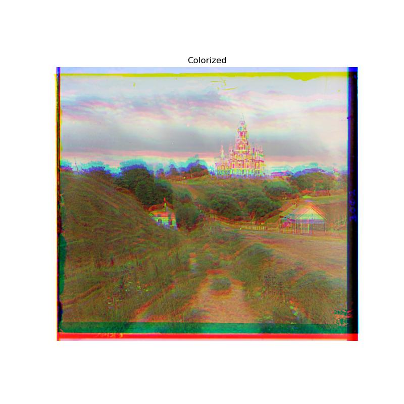


| Image | NCC | L2 | ||
|---|---|---|---|---|
| Green | Red | Green | Red | |
| cathedral.jpg | (5, 2) | (12, 3) | (5, 2) | (12, 3) |
| monastery.jpg | (-3, 2) | (3, 2) | (-3, 2) | (3, 2) |
| tobolsk.jpg | (3, 3) | (6, 3) | (3, 3) | (6, 3) |
For the multi-scale pyramid alignment, we represent the image at multiple scales, i.e. a factor of 2, for a faster search procedure from the coarsest to the largest image.
The failure modes for single-scale alignment are that firstly, the search is slow, since the JPGs are 341 × 390 = 132,990 pixels and the TIFs are 961 × 11.6 million = ~11 billion pixels, about 87x more. A single-scale search at that size means 961 potential offsets × 11.6 million = ~11 billion pixel comparisons per channel. Additionally we would have to scale the search window past ±15 pixels since the TIFs are roughly 10× the size of the JPGs, so the average offset ranges between JPGs and TIFs also roughly differ by 10×. With the multi-scale pyramid, since we downscale by 0.5, the ±15 pixel range is able to handle the search. Then once we’ve found the best offset, we use guess = (coarse[0] * 2, coarse[1] * 2) to multiply it by the amount we downscaled.
The multi-scale pyramid alignment design halves the image until a side is < 400 pixels so that it’s small enough for the ±15 pixel range search. Then scaling back up, at each level, we double the returned offset and run a ±2 pixel range search. We’re able to minimize the cost (significantly less pixels searched) and increase the pixel headroom so that we can reach even beyond the largest offsets. Also, when downscaling the images by halves, we have to turn every 2 × 2 block of pixels into 1, so we average the four pixels using cv.INTER_AREA.
After running each image on both the NCC and L2 metrics, we observe that 12/14 images gave the same (dy, dx) offset result, or within a pixel. However, for church.tif, using L2, there’s a large dx gap of 267 pixels for red, whereas it’s −4 pixels when using NCC; NCC produces a better result here. Similarly for emir.tif, using NCC, there’s a dx gap of −205 pixels for red, whereas it’s 57 pixels when using L2; L2 produces a better result here. However, emir.tif is the one image that is truly misaligned, whereas church.tif is aligned. Both metrics failed once on different images, so it’s hard to say that one metric is better than the other.
NCC is a good metric for when two channels are the same/similar image, uniformly brighter or dimmer. Subtracting the mean and dividing by the norm in NCC removes the brightness differences, leaving just the structure of the objects in the image. However, in the scenario of emir.tif, NCC can’t fix how different materials respond to different colors. For example, the blue robe is super bright and needs the red channel to be brightened to match the blue channel, compared to the wall which needs the red channel to be dimmed. Since NCC doesn’t account for these differences in brightness and tries to generally minimize error, the blue robe is still too dark, and the white wall is still too bright. Thus, even with the multi-scale pyramid alignment variation of search, it’s still comparing two images that are both poorly aligned but will store one image as a “better”-scored alignment even if a channel is still off by ~200 pixels. This issue could be fixed if we tried to detect edges, which represent where a brightness changes, so it no longer matters whether a channel needs to be brightened or dimmed.


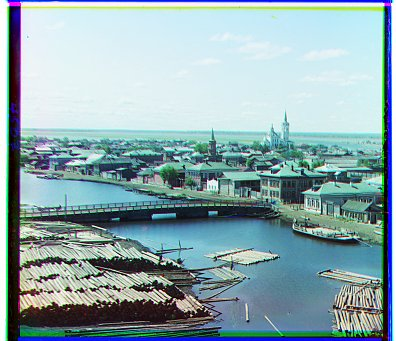
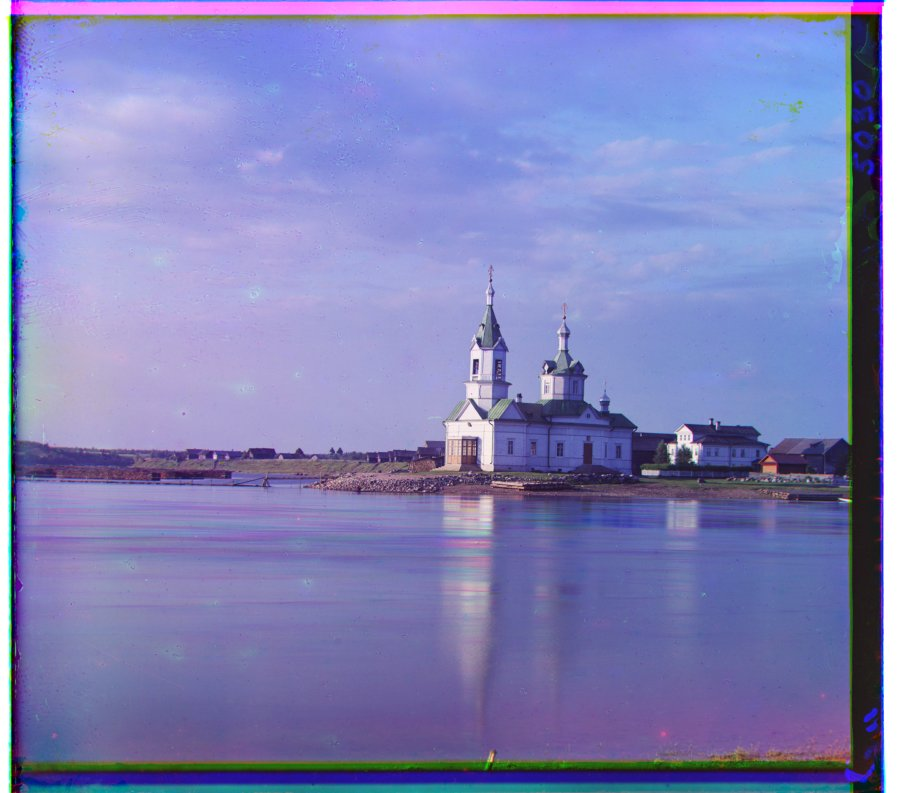
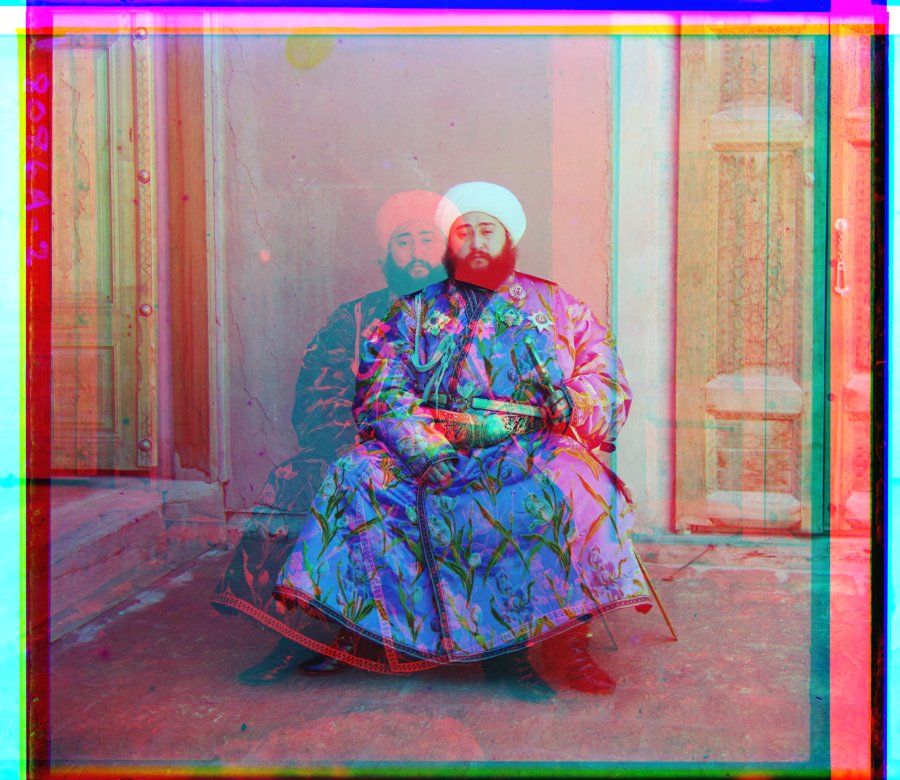
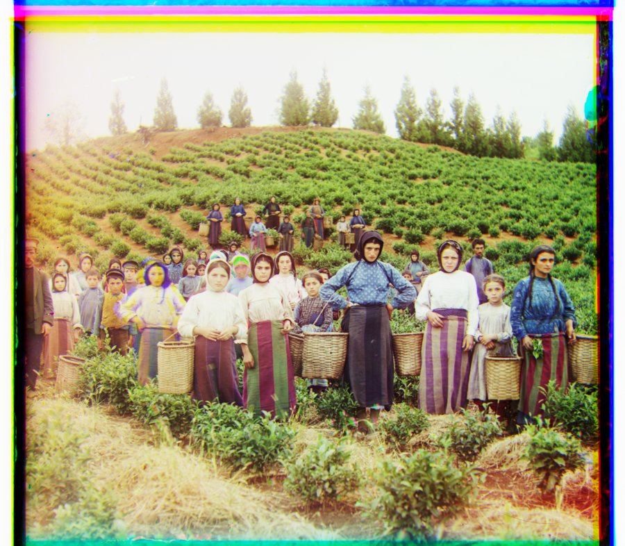
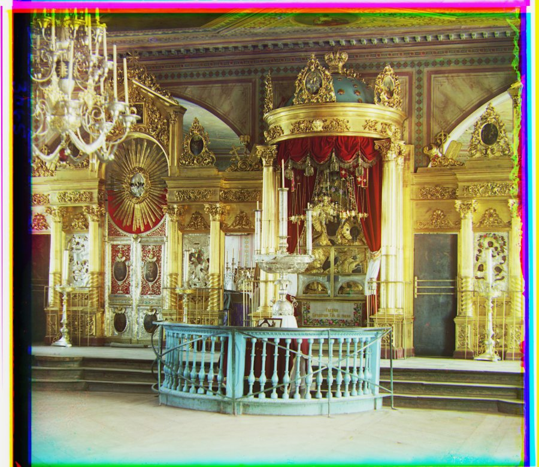
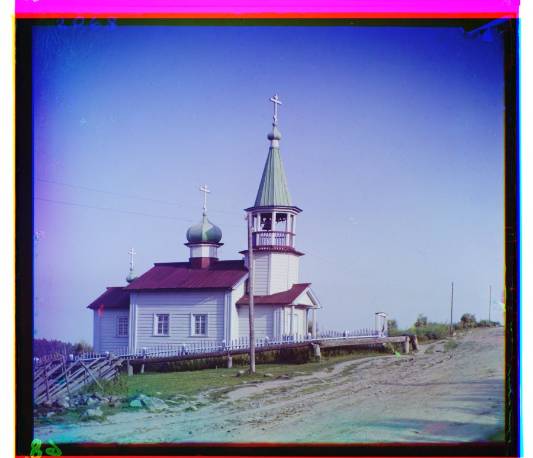
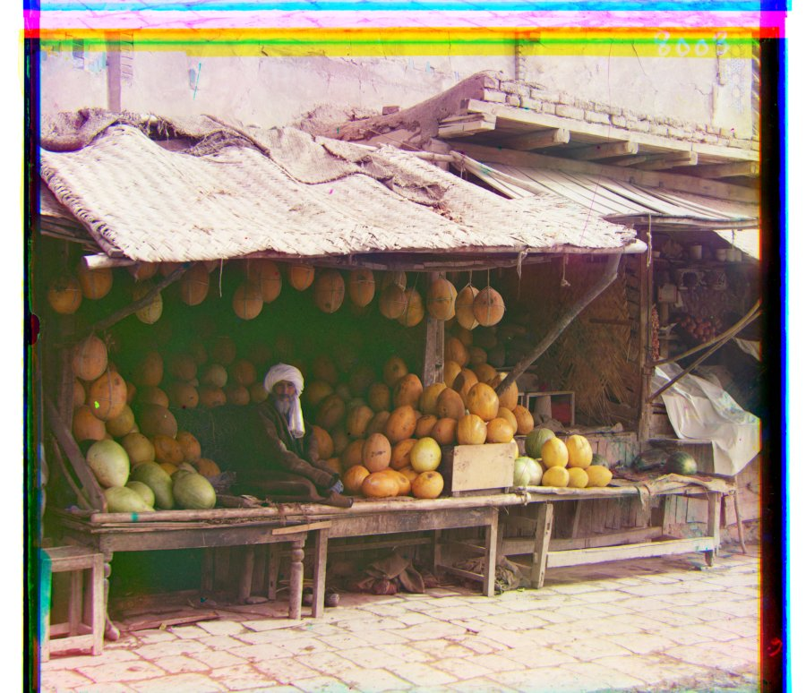
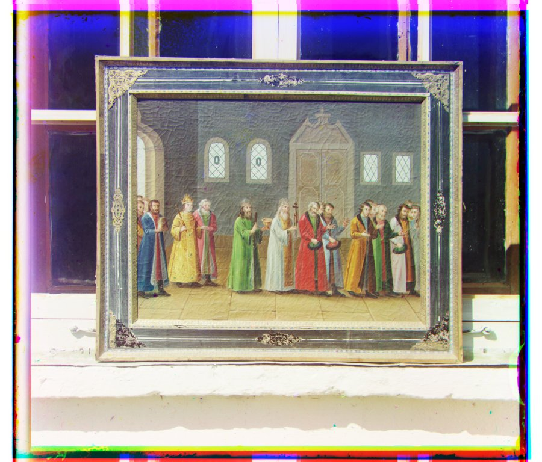
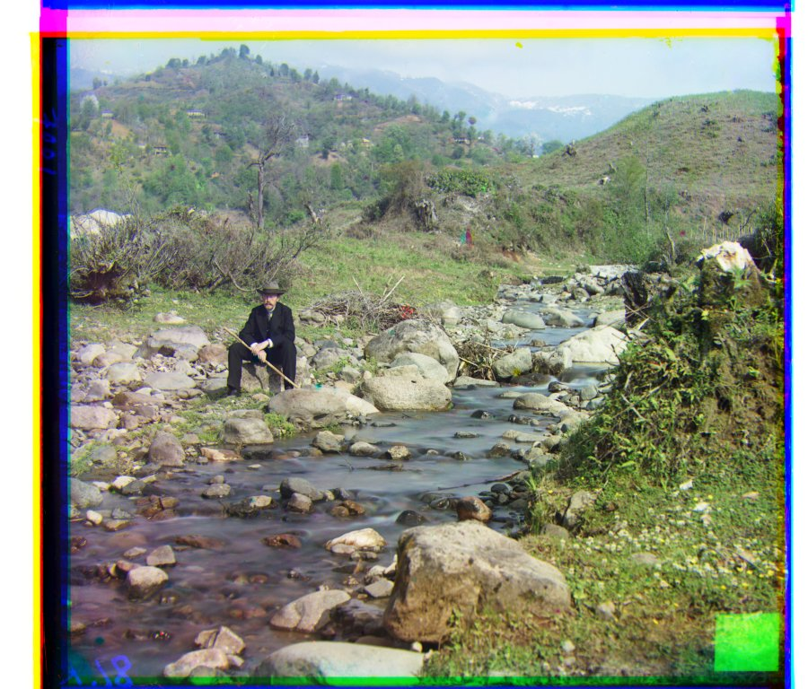
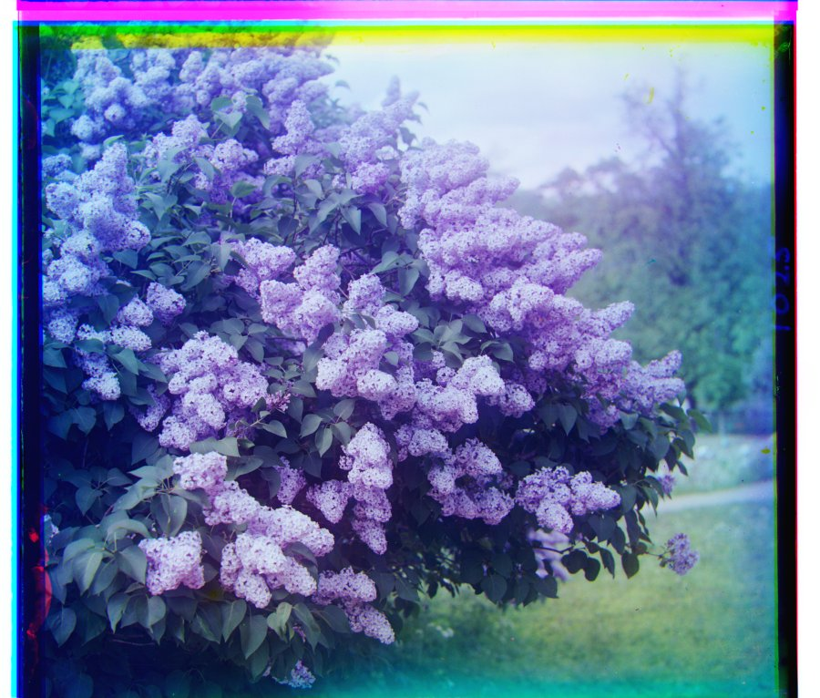
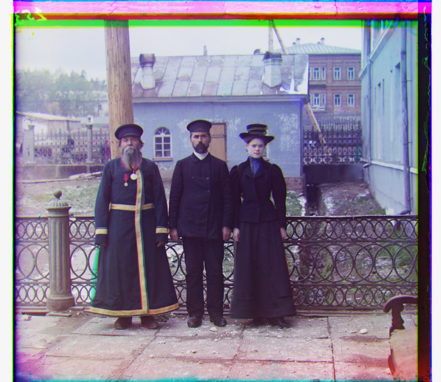
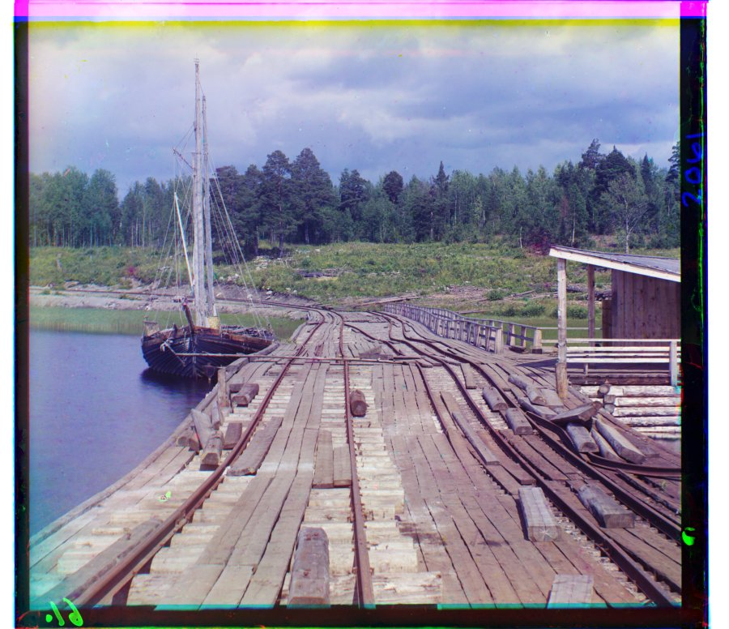
| Image | NCC | L2 | Notes | ||
|---|---|---|---|---|---|
| Green | Red | Green | Red | ||
| cathedral.jpg | (5, 2) | (12, 3) | (5, 2) | (12, 3) | |
| monastery.jpg | (-3, 2) | (3, 2) | (-3, 2) | (3, 2) | |
| tobolsk.jpg | (3, 3) | (6, 3) | (3, 3) | (6, 3) | |
| church.tif | (25, 4) | (58, -4) | (25, 4) | (64, 267) | NCC correct; L2 diverges by 267px |
| emir.tif | (49, 24) | (142, -205) | (49, 24) | (103, 57) | NCC misaligned |
| harvesters.tif | (60, 17) | (124, 14) | (59, 16) | (124, 13) | |
| icon.tif | (41, 17) | (89, 23) | (41, 17) | (90, 23) | |
| ilemselga.tif | (40, 7) | (130, 11) | (39, 7) | (130, 11) | |
| melons.tif | (82, 10) | (178, 13) | (82, 11) | (178, 13) | |
| religous_painting.tif | (28, 3) | (68, 7) | (28, 3) | (68, 7) | |
| self_portrait.tif | (79, 29) | (176, 37) | (79, 29) | (176, 37) | |
| siren.tif | (49, -6) | (96, -25) | (49, -6) | (96, -25) | |
| three_generations.tif | (53, 14) | (112, 11) | (53, 14) | (112, 11) | |
| wharf.tif | (15, -7) | (83, -16) | (15, -7) | (83, -16) | |
| Single-scale | Multi-scale pyramid | |
|---|---|---|
| Candidates at full resolution | 961 (31 × 31) | 25 (5 × 5) |
| Total pixel comparisons | 11.18 billion | 0.43 billion |
| Search reach | ±15 px | ±240 px |
| Time per plate | ~57 s (projected) | 2.2 s (measured) |
| All 14 images | 26.8 s |
|---|---|
| Average per image | 1.9 s |
| Average per .tif | ~2.2 s |